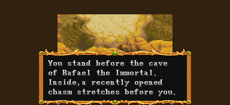

| The cave of Rafael, the Immortal |
| 불멸의 라파엘의 동굴 |
| (일어판 - 精靈ラファエルの洞窟の異變 : 정령 라파엘의 동굴의 이변) |
그 중에서 30층과 50층, 70층을 들를 수 있다.
전설의 검을 얻을 수도 있고 레드 드래곤을 만날 수도 있는 꽤 중요한 곳이다.
인트로 |

당신은 불멸의 라파엘의 동굴 앞에 서 있다.
안쪽에는 최근에 열린 크게 갈라진 틈이 벌어져 있다.
(일어판)
精靈ラファエルの洞窟に突如として出來た巨大な穴。
정령 라파엘 동굴에 돌연 생긴 거대한 구멍.
어두운 지하세계로 통하는 거대한 통로다.
(일어판)
それは暗黑の地底界へと續く巨大な通路...。
그것은 암흑의 지하세계와 이어지는 거대한 통로......
그리고 날이 밝았다......
(일어판)
一夜明けて.........。
하룻밤이 지나고......
마법사를 추격하는 중에, 당신은 라파엘의 동굴의 검은 구멍으로 뛰어들었다.
(일어판)
女王シンの行方を追っている君は、ラファエルの洞窟に出來な向かった。
여왕 신의 행방을 쫓는 당신은, 라파엘 동굴로 향했다.
♪ BGM재생 ♪
갈라진 틈에 접근함에 따라 부유석이 갑자기 반응을 보이며 당신은 빛에 감싸였다.
(일어판)
巨大な穴の近くに來ると浮遊石が突然反應し、光が君をつつみ?む。
거대한 구멍에 접근하자 부유석이 돌연 반응하여, 빛이 당신을 이끌고 있다.
당신은 구멍속으로 깊게 빨려 들어갔다.
(일어판)
君は穴の奧に吸に?まれていった。
당신은 거대한 구멍의 끝에 도달했다.
그리고 일행은 깊은 구멍속으로 떨어진다. 왼쪽에 층수가 표시된다.
30층 |
플레이어 중 한명이라도 바위턱에 닿으면 30층으로 들어가게 된다.
살짝 닿으면 그냥 지나쳐 버리니 확실하게 붙는게 좋다.
(이것은 모든 층에 해당되는 내용이다.)
불의 장벽이 가로막고 있고 건너편에 자이언트 스콜피온 3마리가 돌아다니고 있다.
중간의 자이언트 스콜피온을 제거하면 불의 장벽이 사라진다.
망치나 LB오일을 던져서 제거해도 되고 주문을 써서 제거해도 되고 시프는 대공기로 제거 할 수도 있다. 시프, 매직 유저는 백스텝으로 건너갈 수 있고 드워프는 점프 롤링어택으로 넘어갈 수도 있다. 각자 편한걸 선택하도록 한다.
한가지 더 넘어갈 수 있는 방법이 있다.
옆의 그림처럼 불기둥과 거의 겹치듯이 붙어서 이동하면
(구멍보다 아주 약간 아래)
불에 닿지 않고 통과할 수 있다.
(그림자 위치를 주목)
이 방법은 이런 종류의 트랩이라면 전부 통한다.
아무런 수단이 없다면 시도하는 것도 괜찮다.
위쪽의 자이언트 스콜피온을 제거하면 공중에서 헬 하운드 3마리가 나온다.
(이 헬 하운드는 약 46초가 지나면 도망간다.)
아래쪽의 자이언트 스콜피온을 제거해야 화면이 스크롤 되고 오른쪽 끝까지 갈 수 있다.
(이 자이언트 스콜피온 약 34초가 지나면 도망간다.)
이곳에 오면 헬 하운드 두마리가 오른쪽에서 나온다 (약 43초가 지나면 도망간다.)
상자 A - 잠겨있으며 낙석/석화/불 트랩 중 하나가 발동한다.
| 랜덤 아이템 | 고정 아이템 | 클래스별 아이템 | |||||||
|
|||||||||
| 드워프가 격파시 | |||||||||
상자 A에서 드디어 저주받은 검 2가 나온다. 이것의 저주를 풀면 전설의 검으로 변한다.
저주받은 검 2을 푸는 방법을 보려면 여기를 클릭.
50층 |
50층의 입구도 왼쪽에 있다.
숨겨진 보물
군데 군데 아이템과 상자가 놓여 있다.
* 팻말에 적혀있는 내용 *
A red dragon's fiery breath will char any brave warrior instantly.
레드 드래곤의 성난 브레쓰는 그 어떤 용사라도 그 즉시 새카맣게 태워 버릴 것이다.
(실제로 클래스 불문하고 한방에 즉사한다.)
상자 B - 화살/낙석/석화 트랩 중 하나가 발동한다.
| 랜덤 아이템 | 고정 아이템 | 클래스별 아이템 | |||||||
|
|||||||||
| 드워프가 격파시 | |||||||||
상자 C
| 랜덤 아이템 | 고정 아이템 | 클래스별 아이템 | |||||||
|
|||||||||
| 드워프가 격파시 | |||||||||
몇가지 선택지가 나오는데 잘 선택해야 레드 드래곤을 만나볼 수 있다.
"살고 싶다면 당장 떠나라." - No를 선택
(일어판)
"命が惜しぁったら、すぐ、この場から立ち去れい。"
"목숨이 아깝다면 즉시 여기서 떠나라."

"더 이상 접근한다면 나는 네놈들을 산산조각 낼 것이다. 가능할 때 도망가라." - No를 선택
(일어판)
"このまま進めば、お前と戰うことになろう。命の保障は出來ん。立ち去れい。"
"이대로 계속 가면, 네놈과 싸울 수 밖에 없다. 생명은 보장할 수 없다. 당장 사라져라."
"어리석은 것들. 정말로 파멸을 원하는가?" - Yes를 선택
(일어판)
"おろかな奴よ。もう一度聞く。そんなに死に急ぐか?"
"우매한 놈들. 한 번 더 묻겠다. 그렇게 죽고 싶은가?"
"그렇다면 너희들을 산산조각 내주마!"
(일어판)
"では、死ね!!"
"그럼 죽어라!!"
GO!를 외치는 요정이 사라지면 화면 스크롤이 가능해지며 바로 브레쓰가 날아온다.
재빨리 오른쪽으로 달려야 브레쓰가 멈춘다. 괜히 상자에 걸려서 몰살 당하지 않도록 한다.
"당장 돌아가라"
3번의 대화에서 각각 Yes / Yes / No 를 선택했을 경우 이 대사가 나온다.
이 경우 앞으로 더 전진할 수 없으며 여기서 나가야 한다.
(일어판)
"すぐ戾るがよい"
"당장 떠나는 게 좋을 것이다."

끝부분에도 많은 아이템과 상자가 있다. 따로 액세러리가 없다면 이어링을 얻도록 하자.
* 팻말에 적혀있는 내용 *
Dragons can breathe fire up to 3 times a day.
드래곤은 하루에 3번 브레쓰를 내뿜을 수 있다.
(방금전에 한번 내뿜었으니 실제로 싸울 때는 총 2번만 내뿜는다.)
ps. 요즘 룰에서는 특별히 횟수제한은 없다.
상자 D
| 랜덤 아이템 | 고정 아이템 | 클래스별 아이템 | |||||||
|
|||||||||
| 드워프가 격파시 | |||||||||
상자 E - 잠겨있으며 불 트랩이 무조건 발동한다.
| 랜덤 아이템 | 고정 아이템 | 클래스별 아이템 | |||||||
|
|||||||||
| 드워프가 격파시 | |||||||||
상자 F - 잠겨있으며 낙석 트랩이 무조건 발동한다.
| 랜덤 아이템 | 고정 아이템 | 클래스별 아이템 | |||||||
|
|||||||||
| 드워프가 격파시 | |||||||||
상자 G - 잠겨있으며 석화/화살 트랩 중 하나가 발동한다.
| 랜덤 아이템 | 고정 아이템 | 클래스별 아이템 | |||||||
|
|||||||||
| 드워프가 격파시 | |||||||||
|
모든 보스 중에서 가장 많은 xp를 주는 레드 드래곤
HP가 무척 많고 한대 한대가 무척 아프지만 패턴은 확실하기 때문에 크게 어렵지는 않다.
무는 공격은 슬라이딩으로 멀리 벗어나면 된다. 손바닥 치기는 위아래로 피하거나 파이터/드워프는 A+B, 시프/매직 유저는 백스텝으로 피해도 된다. 불 공격은 한손에서 쏠 때는 반대편으로 피하면 되는데 양손에서 쏘는게 좀 까다로울 것이다. 쏘는 모션을 보이자 마자 바깥쪽으로 재빨리 슬라이딩을 해서 피해야 한다.
HP가 줄어들면 브레쓰를 내뿜는다. 브레쓰에는 3종류가 있다.
먼저 공기를 빨아들이다가 내뿜는 경우가 있다.
이때 플레이어 캐릭터도 중심으로 빨려 들어가는데 바깥쪽으로 달리거나 슬라이딩을 하면 된다.
화면에서 사라졌다가 옆쪽에서 빨아들이다가 내뿜는 경우도 있다.
이때도 플레이어 캐릭터가 왼쪽이나 오른쪽으로 빨려들어가는데 그쪽에서 머리를 내밀고 브레쓰를 내뿜는다. 이때의 안전지대는 머리 밑이므로 빨려들어가는 쪽으로 가면 된다.
마지막으로 화면에서 사라졌다가 배경에서 내뿜는 경우가 있다.
이때는 스테이지 양쪽에 있는 툭 튀어 나온 바위뒤에 숨으면 된다.
LB오일을 이용해서 빠르게 끝내는 방법도 있다. 이 방법은 보스 공략에서 확인하기 바란다.
▶ 클리어 후 레벨이 올라가는 클래스 : 파이터, 클레릭, 시프, 매직 유저 (엘프의 경우 주문 충전)
격렬한 전투 끝에 당신은 레드 드래곤을 물리쳤다.
(일어판)
君達は、力の限り戰いめきついに、レッドドラゴンをを倒した
당신들은 전력을 다해 싸운 끝에, 레드 드래곤을 물리쳤다.
레드 드래곤을 물리친 후 1p 캐릭터들의 위치는 이렇다.
2p 캐릭터들의 경우 1p와는 반대 지점에 위치한다.
(위의 스샷은 물론 합성이다. 실제로 2p 캐릭터 6명이 전원 있을리는 없다.)
다른 때와 마찬가지로 파티에 동일 클래스가 둘 있을 경우 파티에 없는 클래스 중에서
시프 - 매직 유저 - 드워프 - 엘프 순으로 밀려난다.
1p, 2p 전원이 모인다면 아마도 이런 모습일 것 이다.
- 닫기 -
상점 |
레드 드래곤을 물리치지 않았다면 나오지 않는 상점이다.
아이템 구입 가격
| ※ 아이템 교환 | →혹은혹은 |
'용의 뿔'을 가지고 있을 경우 '드래곤 슬레이어'를 만들어 준다.
클레릭의 경우 '뱀의 지팡이'를, 매직 유저의 경우 '마력의 지팡이'를 만들어 준다.
좀 더 자세한 정보는 상점 정보를 보기 바란다. ▶ 상점 정보 보기
70층 |
50층에서 레드 드래곤과 싸우지 않고 나와야 70층에 갈 수 있다. 70층의 입구는 오른쪽에 있다.
30층과 거의 같은 구조다.
마찬가지로 중간의 자이언트 스콜피온을 제거하면 불의 장벽이 사라진다.
위 아래 자이언트 스콜피온의 경우는 정 반대다.
아래쪽의 자이언트 스콜피온을 제거하면 공중에서 헬 하운드 3마리가 나온다.
(이 헬 하운드는 약 46초가 지나면 도망간다.)
이곳의 헬 하운드는 보기가 좀 드문 녹색이다.
위쪽의 자이언트 스콜피온을 제거해야 화면이 스크롤 되고 오른쪽 끝까지 갈 수 있다.
(이 자이언트 스콜피온 약 34초가 지나면 도망간다.)
오른쪽 끝가지 가도 30층과는 달리 헬 하운드는 나오지 않는다
위쪽과 아래쪽 불을 경계로 오른쪽 지대는 화살 트랩 지대다.발을 내딛는 즉시 화살이 날아온다. 그런데 한번 밟은 부분은 화살이 날아오지 않는다. 그래서 디스플레이서 클록이 없는 플레이어가 상자를 열고 싶다면 디스플레이서 클록이 있는 플레이어가 먼저 상자주위의 트랩을 다 발동시켜주는게 좋다.
상자 H - 잠겨있으며 낙석/석화/불 트랩 중 하나가 발동한다..| 랜덤 아이템 | 고정 아이템 | 클래스별 아이템 | |||||||
|
|||||||||
| 드워프가 격파시 | |||||||||
이 상자에서 전 게임을 통틀어 유일하게 정령의 지팡이가 나온다.
레드 드래곤과 싸우지 않았다면 90층까지 내려온 후 다음으로 넘어간다.